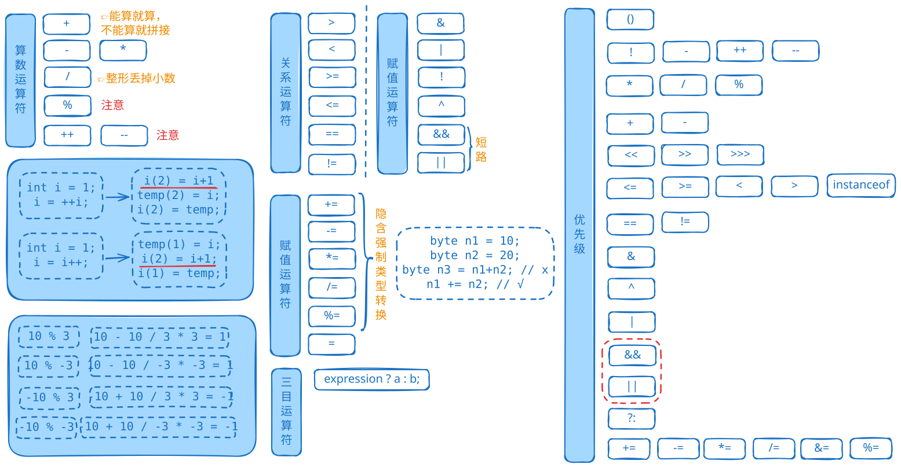

+ - * / % ++ --== != < > <= >= instanceof& | ^ ! && ||& | ^ ~ << >> >>>= += -= *= /= %= &= |= ^= <<= >>= >>>=? :&&和||提高效率==比较浮点数// 使用括号明确优先级
int result = (a + b) * c; // 明确表达意图
// 分步计算复杂表达式
int temp1 = a * b;
int temp2 = c / d;
int finalResult = temp1 + temp2;
// 使用System.out.println调试
System.out.println("a=" + a + ", b=" + b);
System.out.println("中间结果: " + (a + b));
&&和||可以提高性能通过掌握这些运算符的特性和优先级，可以编写出更高效、更清晰的Java代码。